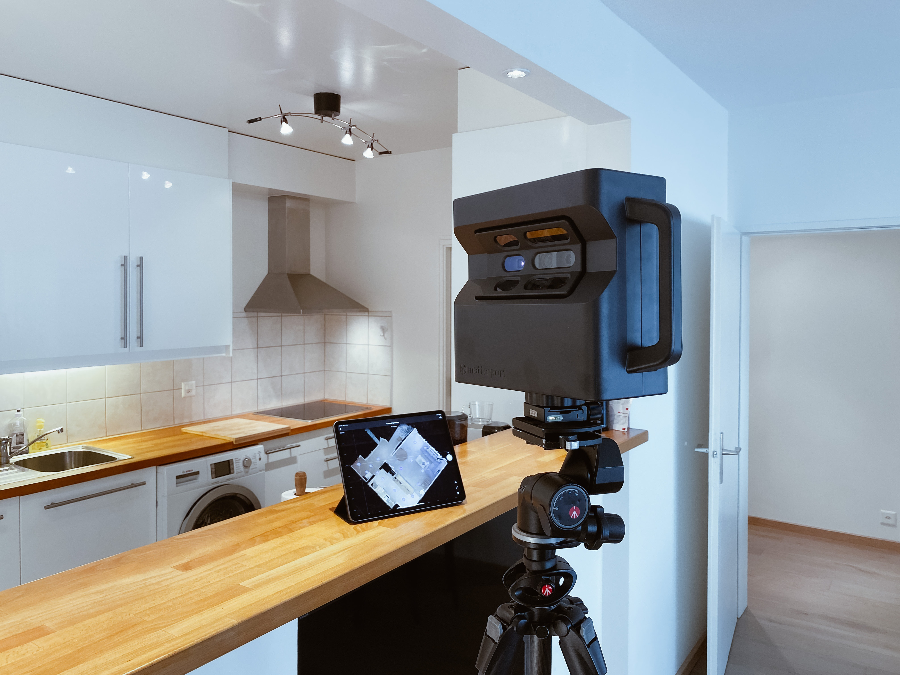

Seevirtual
- Über uns
- Kontakt
- Impressum
Ihr Partner für digitale Zwilinge
Ob sie ihren digitalen Zwiling für Werbezwecke oder für Planung nutzen wollen, wis sind ihr Partner. Wir unterstützen sie in allen Situationen und lösen alle Probleme, auf die sie vielleicht stoßen werden.

Ihre Möglichkeiten mit unseren digitalen Zwillingen
Produktdesing und Prototyping
Immobilienvermarktung
Versicherung- & Gutachterwesen
Kunst & Kreatives schaffen
"In der strahlenden Zukunft der digitalen Zwillinge erblüht eine Ära grenzenloser Erkenntnisse, in der die Verschmelzung von Realität und Virtuellem unser Potenzial entfesselt und unsere Welt auf faszinierende Weise neu gestaltet."